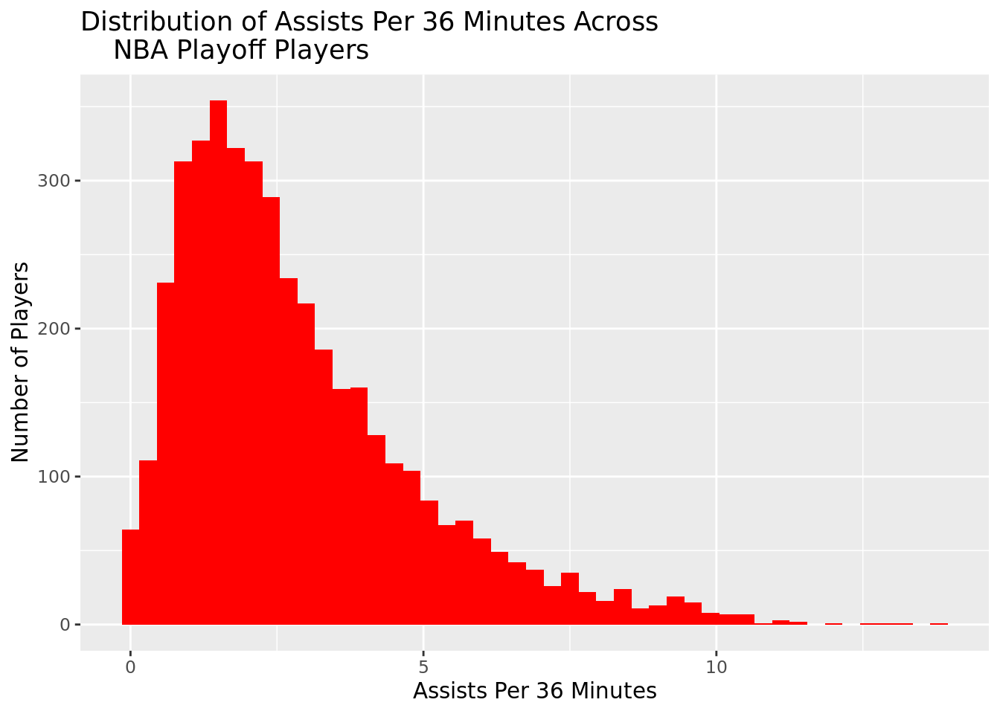
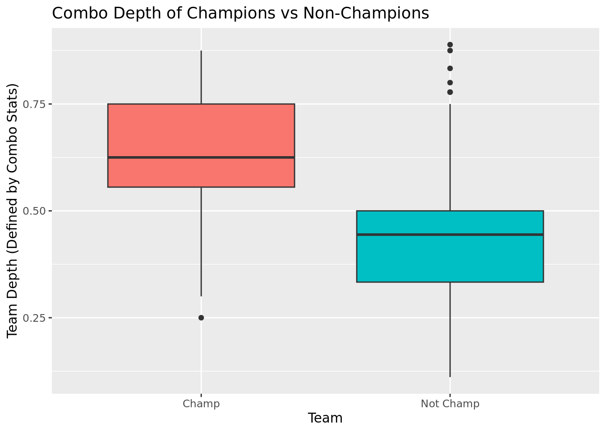
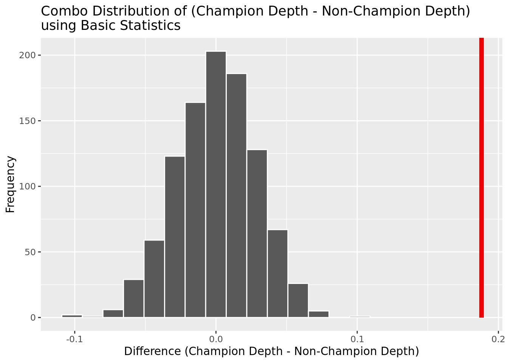

The Nexus between Team Depth and NBA Championship
by Team AAAW: Akhilesh Chegu, William Yan, Anthony Tarakji, Audrey Patterson
Introduction:
The National Basketball Association (NBA) is the most popular premiere basketball league in the world1. It produces data from every one of the 400-500 players in the league every season, leading to several million data points across NBA history2. Every year, many models are developed to evaluate team strength and predict the success of the team.
Team depth is the overall quality of players in a sports team, especially those besides the team’s star players3. A team with good depth has competent players on both their starting lineup and their bench, which allows the team to withstand injuries and to have more flexibility for strategic adjustments. However, despite the importance of team depth, there is no established metric to measure it in the NBA. Quantitative analysis of the connection between team depth and team success is still missing. Many current models that predict the winner of the NBA did not consider team depth as a factor. For instance, the state-of-the-art NBA prediction model developed by Cheng et al used 14 basic technical features, such as 3 points, field goals, and number of steals without considering the team depth4. We believe that the team depth is an important factor that greatly impacts the result of the play-off games. Performing an analysis on this question allows us to develop a systematic method to better understand and assess this often-neglected factor.
In this study, we aim to find this connection by investigating if the championship winning teams have a significantly greater team depth than the rest of the field. We measure team depth in 3 different methods to quantify team depth: (1) Basic statistics approach, (2) Advanced statistics, (3) Combo of Basic and Advanced statistics. We hypothesize that with all 3 measurements, the depths of championship winning teams would be significantly higher than those of the other teams because team depth has a positive effect on the team’s performance. We will then create a model to predict championship win using team depth, demonstrating the real world value of our findings.
NBA play-off data5 from 1990-2022 was collected by Robert Sunderhaft, who web-scraped it from Basketball Reference, a public database of NBA statistics collated by Sports Reference LLC. He constantly updates the dataset and the last update was 9 months ago. We consider basic quantitative statistics such as points per game, assists per game, and rebounds per game to construct team depth in the basics statistics approach. We consider advanced quantitative statistics such as Player Efficiency Rating and win share to construct team depth in the advanced statistics approach (see methodology for specific calculation of these team depth quantitative variables). We use all basic and advanced statistics in the combo approach. Information as to whether or not any given team won a championship was not in the initial dataset, but will be manually added using a list of past NBA champions. This column will also be the categorical data that our logistic model will be predicting.
Although there are no obvious ethical issues with the NBA data, there are some functional limitations. For instance, the “basketball skill” of a given player is not an easily definable variable and can change with each game. To combat this, we clearly defined mathematical formulas for squad depth through three strategies (simple statistics, advanced statistics, and combined statistics). Another issue that arises is that some data, like percentages, blocks, turnovers, and certain advanced statistics, weren’t collected for players in the early years of this dataset, so there are null values instead. To avoid this issue, we selected only those players who played after 1990, when all data values were calculated. Furthermore, for each specific squad depth calculation, we dropped NAs to ensure better analysis and predictive ability.
We decided to use a hypothesis test because we are comparing two different squad depth distributions for a significant difference rather than trying to predict a specific population parameter. In regards to the specific hypothesis that we are addressing, the null hypothesis states that the true squad depth for champions minus the true squad depth for non-champions will equal zero, meaning that there is no statistical difference between the two measured teams. Our alternate hypothesis is that the true squad depth for champions minus the true squad depth for non-champions will be greater than zero, signifying a significant statistical relationship. This means that we can reject the null hypothesis if we were to get a p-value less than .05 and we cannot fail to reject it if it is greater than .05.
\(H_0:\) \(\mu_{c} - \mu_{n} = 0\)
\(H_A:\) \(\mu_{c} - \mu_{n} > 0\)
Legend:
| \(H_0\) | Null Hypothesis: The true squad depth for champions minus the true squad depth for non-champions will equal zero. |
|---|---|
| \(H_a\) | Alternate hypothesis: The true squad depth for champions minus the true squad depth for non-champions will be greater than zero. |
| \(\bar{x_c}\) | Sample mean squad depth for champions |
| \(\bar{x_n}\) | Sample mean squad depth for champions |
| \(\mu_c\) | Population mean squad depth for champions
|
| \(\mu_n\) | Population mean squad depth for non-champions |
Data Wrangling
Rows: 10648 Columns: 51
── Column specification ────────────────────────────────────────────────────────
Delimiter: ","
chr (3): player, pos, team_id
dbl (48): season, age, g, gs, mp_per_g, fg_per_g, fga_per_g, fg_pct, fg3_per...
ℹ Use `spec()` to retrieve the full column specification for this data.
ℹ Specify the column types or set `show_col_types = FALSE` to quiet this message.Rows: 10,648
Columns: 51
$ season <dbl> 2022, 2022, 2022, 2022, 2022, 2022, 2022, 2022, 2022,…
$ player <chr> "Omer Yurtseven", "Kessler Edwards", "Draymond Green"…
$ pos <chr> "C", "SF", "PF", "SF", "PG", "PF", "C", "PF", "SG", "…
$ age <dbl> 23, 21, 31, 34, 26, 26, 29, 33, 28, 23, 24, 28, 27, 2…
$ team_id <chr> "MIA", "BRK", "GSW", "PHI", "NOP", "DEN", "UTA", "ATL…
$ g <dbl> 9, 2, 22, 12, 6, 5, 6, 5, 5, 6, 9, 18, 10, 6, 13, 4, …
$ gs <dbl> 0, 0, 22, 12, 0, 5, 6, 3, 0, 0, 0, 18, 10, 6, 13, 4, …
$ mp_per_g <dbl> 4.2, 3.5, 32.0, 26.6, 10.0, 32.0, 32.8, 22.4, 15.2, 6…
$ fg_per_g <dbl> 1.3, 0.0, 3.1, 3.0, 1.0, 4.6, 3.5, 3.6, 1.2, 0.0, 0.3…
$ fga_per_g <dbl> 2.0, 0.0, 6.5, 7.4, 3.0, 10.8, 5.5, 9.0, 3.0, 1.2, 0.…
$ fg_pct <dbl> 0.667, NA, 0.479, 0.404, 0.333, 0.426, 0.636, 0.400, …
$ fg3_per_g <dbl> 0.0, 0.0, 0.4, 2.6, 0.8, 0.6, 0.0, 0.8, 0.8, 0.0, 0.2…
$ fg3a_per_g <dbl> 0.2, 0.0, 1.8, 6.3, 2.3, 3.0, 0.0, 3.0, 2.2, 0.5, 0.2…
$ fg3_pct <dbl> 0.000, NA, 0.205, 0.408, 0.357, 0.200, NA, 0.267, 0.3…
$ fg2_per_g <dbl> 1.3, 0.0, 2.8, 0.4, 0.2, 4.0, 3.5, 2.8, 0.4, 0.0, 0.1…
$ fg2a_per_g <dbl> 1.8, 0.0, 4.8, 1.1, 0.7, 7.8, 5.5, 6.0, 0.8, 0.7, 0.2…
$ fg2_pct <dbl> 0.750, NA, 0.581, 0.385, 0.250, 0.513, 0.636, 0.467, …
$ efg_pct <dbl> 0.667, NA, 0.507, 0.579, 0.472, 0.454, 0.636, 0.444, …
$ ft_per_g <dbl> 0.1, 0.0, 1.4, 0.0, 1.2, 4.0, 5.0, 2.2, 0.8, 0.0, 0.0…
$ fta_per_g <dbl> 0.3, 0.0, 2.1, 0.1, 1.3, 5.6, 7.3, 2.2, 1.0, 0.0, 0.0…
$ ft_pct <dbl> 0.333, NA, 0.638, 0.000, 0.875, 0.714, 0.682, 1.000, …
$ orb_per_g <dbl> 0.1, 0.0, 1.2, 0.8, 0.3, 3.6, 3.5, 0.4, 0.2, 0.3, 0.0…
$ drb_per_g <dbl> 0.7, 0.0, 6.0, 2.3, 1.2, 3.6, 9.7, 3.8, 0.4, 0.2, 0.2…
$ trb_per_g <dbl> 0.8, 0.0, 7.2, 3.1, 1.5, 7.2, 13.2, 4.2, 0.6, 0.5, 0.…
$ ast_per_g <dbl> 0.3, 0.5, 6.3, 0.8, 0.7, 2.6, 0.5, 0.8, 1.4, 0.5, 0.0…
$ stl_per_g <dbl> 0.0, 0.5, 1.1, 1.0, 0.2, 0.4, 0.2, 0.2, 0.2, 0.2, 0.0…
$ blk_per_g <dbl> 0.1, 0.0, 1.0, 0.3, 0.2, 1.2, 1.0, 0.0, 0.0, 0.0, 0.0…
$ tov_per_g <dbl> 0.0, 0.5, 2.7, 1.1, 0.7, 1.6, 1.3, 1.0, 0.4, 0.2, 0.0…
$ pf_per_g <dbl> 0.2, 1.5, 4.0, 1.9, 0.5, 2.8, 3.2, 1.2, 1.4, 1.0, 0.0…
$ pts_per_g <dbl> 2.8, 0.0, 8.0, 8.6, 4.0, 13.8, 12.0, 10.2, 4.0, 0.0, …
$ ast_pct <dbl> 16.6, 17.5, 25.7, 4.9, 9.4, 12.0, 2.4, 6.4, 12.4, 10.…
$ blk_pct <dbl> 2.9, 0.0, 3.2, 1.2, 1.4, 3.9, 3.8, 0.0, 0.0, 0.0, 0.0…
$ bpm <dbl> 8.0, -4.4, 0.9, 1.3, -1.1, -1.3, 2.3, -1.8, -2.8, -14…
$ dbpm <dbl> 2.8, 6.4, 2.9, 0.9, -1.0, -2.2, 0.1, -1.3, -1.9, -2.9…
$ drb_pct <dbl> 19.3, 0.0, 20.6, 10.3, 14.7, 14.4, 34.1, 20.9, 3.4, 3…
$ dws <dbl> 0.0, 0.0, 1.0, 0.3, 0.0, 0.0, 0.2, 0.0, -0.1, 0.0, 0.…
$ fg3a_per_fga_pct <dbl> 0.111, NA, 0.271, 0.854, 0.778, 0.278, 0.000, 0.333, …
$ fta_per_fga_pct <dbl> 0.167, NA, 0.326, 0.011, 0.444, 0.519, 1.333, 0.244, …
$ mp <dbl> 38, 7, 703, 319, 60, 160, 197, 112, 76, 36, 16, 688, …
$ obpm <dbl> 5.1, -10.8, -2.0, 0.4, -0.2, 0.9, 2.2, -0.6, -0.8, -1…
$ orb_pct <dbl> 3.0, 0.0, 4.3, 3.6, 3.7, 13.5, 12.5, 2.1, 1.6, 6.2, 0…
$ ows <dbl> 0.1, 0.0, 0.4, 0.0, 0.1, 0.3, 0.6, 0.0, 0.1, -0.1, 0.…
$ per <dbl> 25.8, -2.2, 12.3, 9.9, 11.5, 15.7, 19.4, 10.8, 7.8, -…
$ stl_pct <dbl> 0.0, 7.3, 1.8, 2.0, 0.9, 0.6, 0.3, 0.5, 0.7, 1.5, 0.0…
$ tov_pct <dbl> 0.0, 100.0, 26.4, 12.7, 15.7, 10.8, 13.3, 9.1, 10.4, …
$ trb_pct <dbl> 10.8, 0.0, 12.7, 7.1, 8.9, 13.9, 23.3, 11.3, 2.4, 5.1…
$ ts_pct <dbl> 0.647, NA, 0.534, 0.576, 0.558, 0.520, 0.688, 0.512, …
$ usg_pct <dbl> 22.6, 6.6, 14.0, 15.1, 18.3, 20.2, 14.3, 22.5, 11.0, …
$ vorp <dbl> 0.1, 0.0, 0.5, 0.3, 0.0, 0.0, 0.2, 0.0, 0.0, -0.1, 0.…
$ ws <dbl> 0.2, 0.0, 1.4, 0.3, 0.1, 0.2, 0.7, 0.0, 0.0, -0.2, 0.…
$ ws_per_48 <dbl> 0.228, -0.104, 0.094, 0.049, 0.049, 0.063, 0.182, 0.0…# A tibble: 6 × 51
season player pos age team_id g gs mp_pe…¹ fg_pe…² fga_p…³ fg_pct
<dbl> <chr> <chr> <dbl> <chr> <dbl> <dbl> <dbl> <dbl> <dbl> <dbl>
1 2022 Omer Yu… C 23 2022MIA 9 0 4.2 1.3 2 0.667
2 2022 Kessler… SF 21 2022BRK 2 0 3.5 0 0 NA
3 2022 Draymon… PF 31 2022GSW 22 22 32 3.1 6.5 0.479
4 2022 Danny G… SF 34 2022PHI 12 12 26.6 3 7.4 0.404
5 2022 Devonte… PG 26 2022NOP 6 0 10 1 3 0.333
6 2022 Aaron G… PF 26 2022DEN 5 5 32 4.6 10.8 0.426
# … with 40 more variables: fg3_per_g <dbl>, fg3a_per_g <dbl>, fg3_pct <dbl>,
# fg2_per_g <dbl>, fg2a_per_g <dbl>, fg2_pct <dbl>, efg_pct <dbl>,
# ft_per_g <dbl>, fta_per_g <dbl>, ft_pct <dbl>, orb_per_g <dbl>,
# drb_per_g <dbl>, trb_per_g <dbl>, ast_per_g <dbl>, stl_per_g <dbl>,
# blk_per_g <dbl>, tov_per_g <dbl>, pf_per_g <dbl>, pts_per_g <dbl>,
# ast_pct <dbl>, blk_pct <dbl>, bpm <dbl>, dbpm <dbl>, drb_pct <dbl>,
# dws <dbl>, fg3a_per_fga_pct <dbl>, fta_per_fga_pct <dbl>, mp <dbl>, …Data Cleaning (Done Above)
Reorder the dataset in such a way that it is done by team by year. Filter out all players who played less than 10 minutes per game and all years before 1990.
Append new row of champions by year
Quantification of Team Depth using Basic Depth, Advanced Depth, and Combo Depth
We quantify team depth using this general equation: \(\#Quality Players / \#Rotation Players\)
Rotation players are those with more than 10 minutes per game on average).
We propose 3 different ways to define quality player, thus creating 3 ways to quantify team depth (Basic Depth, Advanced Depth, Combo Depth).
Literature Review
Similar to our model that aims to predict whether or not a team wins a championship, Cheng et al. also developed a state-of-the-art NBA prediction model back in 20166. They utilized 14 basic technical features, such as 3-point shots made, field goals made and attempted, and the number of steals to predict the winning team of an NBA match. Their model was able to predict the winning team in any given game with a 74.4% accuracy. However, their model did not consider the team depth. We aim to improve the current model by using the team (squad) depth as a factor to more accurately predict the championship win of the NBA teams. Since squad depth is an important metric to evaluate a given team’s strength, we believe that the added team depth would provide great additional predictive power to the state-of-the-art models.
Methodology
Hypothesis Testing Methods: Permute for diff in means
Permuting allows us to construct a null distribution by randomizing the observations by whether a team won a championship (Championship) or not(Non-championship). Permuting to test for significance also allows us to measure the quality of the inference we make. Specifically, in this case, we use a modified data set to adjust the existing data to the theoretical null hypothesis (so that depth_championship - depth_nonchampions == 0) to set up the permute approach. This process is repeated for the basic, advanced, and combo stats. We use permute shuffling to construct the probability that the observed difference in squad depth (for basic, advanced, and combo) is as different as or more different than they are between the championship and non-championship teams in the synthesized null distribution. The permute shuffling allows us to randomize the observations which will minimize the effect of confounding variables, such as year-specific rule changes, on the mean team depth. Additionally, using permute shuffling is justified by the fact that there are 33 championship-winning teams and 400+ non-championship-winning teams, giving a big enough n for both to make the comparison viable.
Furthermore, we use permute shuffle because we want to eliminate other confounding variables such as a given year’s pace of play or different referees’ thresholds for calling fouls. Thus, the random permute shuffle across eras regardless of championship or non-championship minimizes those other factors and creates the true null distribution without the implied relationship between squad depth and championship. This allows us to have a distribution to compare our data to in order to observe the extent of the difference in squad depth across the championship variable.
Modeling
If our alternate hypothesis holds true and the squad depth is significantly higher for championship teams, we will identify the quantification of team depth that resulted in the smallest p-value (greatest significant difference). We will then fit this team depth metric to a logistic model to predict whether the team wins the championship, showing the real-life application of our statistical finding. We use a logistic model because we are predicting a categorical variable with two outcomes (championship or no championship) based on the predictive numerical variable of squad depth.
For now, let’s start with visualizing and analyzing each group of stats.
Part 1: Basic stats
Categories and their Respective Thresholds:
Points Per 36 minutes: (points per game / minutes per game) *36 > 16
- 16 pp36 is approximately the 60th percentile of pp36, per basketball reference7, so we decided to use it as our threshold.
Rebounds Per 36 minutes: (rebounds per game / minutes per game) *36 > 6.5
- 6.5 rp36 is approximately the 60th percentile of rp36 from website below, per basketball reference.
Assists Per 36 minutes: (assists per game / minutes per game) *36 > 3.5
- 3.5 ap36 is approximately the 60th percentile of ap36 from website below, per basketball reference.
We used the 60th percentile as our threshold value for these basic statistics because we wanted to selectively choose for players who were substantially better than average (thus not making the threshold the 50th percentile) but also not being so selective that the squad depth statistics are nearly 0. However, the specific choice of using the 60th percentile in that range (as supposed to 55th or 67th for example) was an arbitrary choice.
To calculate Basic Depth per team:
Numerator = #players who met the pp36 threshold | #players who met the rp36 threshold | #players who met the ap36 threshold
Denominator = #players in rotation (played >=10 minutes per game)
This should be a number between 0 and 1 that measures the proportion of “quality” players in the team’s rotation



The points per 36 minutes distribution is approximately normally distributed with a center of around 12 pp36.
The rebounds per 36 minutes distribution is right skewed with a median of approximately 5 rp36 and a mean of around 6 rp36.
The assists per 36 minutes distribution is right skewed with a median of approximately 2.5 ap36 and a mean of around 3 ap36.
# A tibble: 496 × 3
team_id count_qual count_rot
<chr> <int> <int>
1 1990BOS 7 8
2 1990CHI 7 9
3 1990CLE 5 7
4 1990DET 8 8
5 1990HOU 5 7
6 1990LAL 6 8
7 1990MIL 6 7
8 1990NYK 6 8
9 1990PHI 5 7
10 1990PHO 6 7
# … with 486 more rowsResults Part 1: Analysis of Basic Squad Depth of Championship Winning Teams vs Other Playoff Teams
In this section, we evaluate the results of our basic model’s calculation of team depth of championship winning teams and other teams. We expect that teams that win championships are likely better than teams that do not and should thus have a higher team depth. We want to determine whether there is an appreciable difference in squad depth for teams that win championships and teams that do not for our basic model.

Here we present the squad depth of champions and non-champions in a box-plot format. This allows for a side-by-side comparison of the medians, quartiles, and spread for squad depth for both categories of teams.
The box-plot above shows that there is a limited difference in team depth between champion and non champion teams. It appears that for champion teams, team depth has a tighter spread, a slightly higher median value than for non-champion teams, and quartiles are similarly clustered around the median for both categories.
Here we use a violin plot to gain a deeper understanding of where the data points lie. As opposed to the box plot, the violin plot allows us to recognize any local maximums and view how the data is actually distributed within the quartiles.
As shown in the violin plot, non-champ teams have a larger spread when it comes to team depth, but most of the data is distributed very similarly to champion teams. There does appear to be a slightly higher number of champion teams that have a squad depth over 0.8. The championship teams’ squad depth distribution is approximately normal, while the non-championship teams’ squad depth distribution has three modes and a slight left skew.
Statistical Test
# A tibble: 2 × 2
Championship `mean(Basic_depth)`
<chr> <dbl>
1 Champ 0.755
2 Not Champ 0.720Point Estimate: \(\bar{x_c} - \bar{x_n}\) = 0.035
Here we use a difference of mean permute shuffle to determine if there is a true difference in the true mean team depth values for champions and non-champions. We use permute shuffling to test for significance because we are working with a sample dataset and want to determine the veracity of our hypotheses regarding the true values for the population.

As shown above, there is a moderate likelihood that there is a mean difference greater than the observed mean difference in team depth when the null hypothesis is true. This is specifically shown in that when the true population mean difference in basic squad depth is defined as 0, a medium portion of the distribution will have a mean difference that is greater than the observed mean difference for our sample.
# A tibble: 1 × 1
p_value
<dbl>
1 0.078The p value informs us of the probability of observing the squad depth difference between the two samples of 0.035 or more extreme, given that the null hypothesis is true. The p value tells us that the probability of observing a squad depth difference greater than 0.035 for champion and non-champion teams is 0.078, given that the null hypothesis is true and there is no difference between squad depth for these categories. Our determined p-value is above our value for alpha (0.05), allowing us to determine that there is not enough evidence to reject the null hypothesis and there is not a difference observed in team depth for champions and non-champions for the basic model.
Overall Conclusion:
The box plot and violin plot show that both champion and non-champion teams have a similar distribution of team depth scores. Furthermore, our statistical testing led us to fail to reject the null hypothesis that there is no difference in the true mean squad depths. Thus, we have weak and insufficient evidence to conclude that there is a significant difference in true mean squad depths.
Part 2: Advanced Stats
Categories and respective Threshold Values:
Player Efficiency Rating >=15
15 is approximately the 60th percentile of PER, from basketball reference8, so we used it as our threshold value
Player Efficiency Rating = (PTS + REB + AST + STL + BLK − Missed FG − Missed FT - TO) / GP.
- Note: STL is total steals, BLK is total blocks, Missed FG is total missed field goals, Missed FT is total missed free throws, TO is total turnovers, GP is number of games played
This is already calculated in the dataset.
Win Shares per 48 min >= 0.1
0.1 is approximately 50th percentile9 (Win shares are distributed across a team so to get an accurate assessment of how many people contributed we need a bit more lenient threshold otherwise it would be egregiously small)
Based on the statistical contribution of everyone on the team, the total number of wins on the team gets proportionally distributed to each player, and we calculate the win shares each player contributed per 48 minutes (1 game)
This is already calculated in the dataset.
To calculate Advanced Depth per team:
Numerator = #players who met the PER threshold | #players who met the WS48 threshold
Denominator = #players in rotation (played >=10 ppg)
This should be a number between 0 and 1 that measures the proportion of “quality” players in the team’s rotation but based on advanced stats this time

The PER distribution is approximately normal with a center at around 13.
The WS/48 distribution is approximately normal with a center at around 0.1.
Results Part 2: Analysis of Advanced Squad Depth of Championship Winning Teams vs Other Playoff Teams
In this section, we evaluate the results of our advanced model’s calculation of team depth of championship winning teams and other teams. We expect that teams that win championships are likely better than teams that do not across their entire lineup and should thus have a higher team depth. We want to determine whether there is an appreciable difference in squad depth for teams that win championships and teams that do not for our basic model.

As shown in the box plot, there is a substantial difference in the team depth for champion and non-champion teams. The median squad depth of champion teams and non champion teams is approximately 0.75 and 0.5 respectively, and 1st and 3rd quartiles do not overlap between the two categories. The squad depth for champion teams has a much smaller spread relative to that of the non-champion teams.
The violin plot showcases that there is limited overlap in the distributions of team depth for champion and non-champion teams. Furthermore, a substantial portion of the non-champion teams have a squad depth that is lower than the minimum value of squad depth for champion teams. Both distributions are relatively normally distributed.
# A tibble: 2 × 2
Championship `mean(Adv_depth)`
<chr> <dbl>
1 Champ 0.751
2 Not Champ 0.506Point Estimate: \(\bar{x_c} - \bar{x_n}\) = 0.245
We use permute shuffling again for the same reason as we did for basic stats.

In the null distribution above, we see that there is functionally 0 probability that when the null hypothesis is true that our true mean difference is greater than what we observed in our sample, which is consistent with our p < 0.001 calculation from earlier.
# A tibble: 1 × 1
p_value
<dbl>
1 0The p-value is reported as 0, therefore we can assume that P < 0.001
The p-value informs us of the probability of observing the difference seen between the two datasets or more extreme, given that the null hypothesis is true. The p value tells us that the probability of observing a squad depth difference greater than 0.245 for champion and non-champion teams is < 0.001, given that the null hypothesis is true and there is no difference between squad depth for these categories. Our determined p-value is below our value for alpha (0.05), allowing us to reject the null hypothesis and conclude our alternate hypothesis that there is a significant difference in team depth for champions and non-champions for the basic model. Specifically, champion team depth (using advanced method) is significantly higher than non-champion team depth.
Overall Conclusions:
Our box plot and violin plot provide strong evidence for the hypothesis that there is a substantial difference in the distribution of team depth values for champions and non-champions and that champions generally had a higher team depth value as determined by our advanced model. Furthermore, our hypothesis testing allowed us to conclude that there is enough evidence to reject the null hypothesis that there is no difference in true mean team depths between the categories. Thus, we can conclude the alternate hypothesis that there is a significant difference in team depth for champion and non-champion teams.
Part 3: Combo
Definition: players must meet both the requirement of basic stats and advanced stats to be considered as quality player
- (# Quality Basic & Advanced Stats Players) / # Rotation Players
Overall, these 3 quantifications (basic, advanced, combo) of team depth will each be tested to see if championship-winning teams would have a significantly higher team depth.
Results Part 3: Analysis of Combined Squad Depth of Championship Winning Teams vs Other Playoff Teams
In this section, we evaluated team depth of championship-winning teams and other teams using the combo stats, (# players who meet basic depth threshold + advanced depth threshold) / #rotation players, to define depth. We want to know if the team depth of championship winning teams is significantly higher than those of the team who did not win the championship.

As can be seen in the box plot above, there is a significant difference in squad depth for champion and non-champion teams. The median squad depth of champion teams falls around .60 while the medium squad depth of the non-champion team falls a little below .50. There is also no quartile overlap between the two variables meaning that there is little doubt about the greater squad depth of the champion team. The two variables measured have similar ranges.

For the champ team the highest frequency of squad depth falls around .60 again, and for not champ teams it falls around .50, suggesting that the champ team’s combo depth is higher than the other teams. Further, what we get from this graph is a more widespread, normal distribution of all squad depths, justifying the use of permute shuffling statistical tests.
# A tibble: 2 × 2
Championship `mean(Combo_depth)`
<chr> <dbl>
1 Champ 0.627
2 Not Champ 0.439Point Estimate: \(\bar{x_c} - \bar{x_n}\) = 0.188
We use permute shuffling for the same reasons as we do for basic and advanced stats.

This graph shows the frequency of difference in squad depth from Champion teams vs non champion teams, assuming the null hypothesis was true. The difference that had the highest frequency was 0 difference. The probability that we observe the sample mean difference as large or larger than the observed difference (.188), looks to be pretty much 0, which is consistent with our p<0.001 observation.
# A tibble: 1 × 1
p_value
<dbl>
1 0P value is reported as 0, therefore we can assume that P < 0.001.
The p-value is the strength of evidence against the null hypothesis. If the null hypothesis were true in this scenario, there would be no significant difference in squad depths for champion vs not champion teams and the p value would output a high value for relationship (between champ and non champ teams) differences occurring by chance. Based on what we have seen in the graphs and based on our output p-value (<0.001), we can deduce that the difference between the two variables’ squad depth is of statistical significance and we can thus reject the null hypothesis. This p value indicates that this statistical difference is highly unlikely to have occurred by chance. There is a statistical difference in team (champion vs not champion) squad depths.
Overall Conclusion:
Based on all three of these analysis methods, we found that there is a statistically significant difference between the combo squad depth of champion teams vs non champion teams. This aligns with our alternate hypothesis that the championship winning team has a significantly greater team depth than non-champion teams. The depths of championship winning teams were significantly higher than those of the other teams.
Logistic Model: Methodology and Results
This model goes a step further and does not solely look at the difference in squad depth between the two variables. It instead takes a real world scenario (a championship win) and predicts the probability of each variable achieving that scenario. This model will predict the probability of a championship team winning the championship vs a non-championship team based on the advanced data set (the variables that made up the advanced squad depth). We used advanced squad depth because that had the most significant difference between the championship and non-championship
# A tibble: 2 × 5
term estimate std.error statistic p.value
<chr> <dbl> <dbl> <dbl> <dbl>
1 (Intercept) 8.69 1.06 8.21 2.25e-16
2 Adv_depth -9.55 1.45 -6.58 4.77e-11Generalized: \(\log\Big(\frac{p}{1-p}\Big) = \beta_0 + \beta_1 \times Adv\_depth\)
Specific: \(\log\Big(\frac{\hat{p}}{1-\hat{p}}\Big) = 8.69 - 9.55 \times Adv\_depth\)
The log odds of not winning the championship given the team depth is 0 is 8.69.
For every one unit of increase in Adv_depth, we estimate a mean decrease of 9.55 in the log odds of not winning the championship.

The y axis is the probability of the team not winning the championship. We can see the dots are representing what the actual observation is whether a team wins a championship or not. Overall, the logistic model has good accuracy as it captures the general trend that a lower team depth leads to higher probability of not winning a championship. However, from the distribution of the dots, teams with advanced team depth > 0.5 contains both championship and non-championship teams, making it hard for the model to predict the success of the team purely based on the team depth.
[1] 107.3966[1] 129.2284The AIC from the advanced model is 107.4, and the AIC from the combined model is 129.2.

# A tibble: 1 × 3
.metric .estimator .estimate
<chr> <chr> <dbl>
1 roc_auc binary 0.856
# A tibble: 1 × 3
.metric .estimator .estimate
<chr> <chr> <dbl>
1 roc_auc binary 0.852| Model | AIC | AUC |
|---|---|---|
| Advanced Squad Depth | 107.4 | 0.856 |
| Combined Squad Depth | 129.2 | 0.852 |
Since we had strong evidence for the alternate hypotheses that advanced and combo team depth are significantly higher in championship-winning teams, we made 2 logistic models to predict if a team won a championship using advanced and combo team depth respectively. The advanced team depth model has an AUC of 0.856 and AIC of 107.4. The combo team depth model has an AUC of 0.852 and AIC of 129.2. The advanced team depth model yielded the best result in terms of both AUC and AIC (107.4). With a high AUC, the advanced team depth model more successfully captured the trend and made more accurate predictions of the probability of a given team winning the championship.
Discussion
Overall, our hypothesis test results showed that championship-winning teams had a significantly greater true mean squad depth than non-champion teams, which we found using both the advanced and combined squad depth approach. Since the quantification of team depth is specifically tuned to NBA statistics, the results are not generalizable to other basketball leagues. If the NBA season is not independent of each other because players play for the same team across multiple seasons, this means that our result can only be applicable to our dataset or a similar dataset for the NBA playoffs from 1990 to 2021. Since both the advanced and combined team depth were significantly higher in championship winning teams, we made 2 logistic models to predict if a team won a championship using advanced and combo team depth respectively. Our logistic model showed that the advanced squad depth calculations and resulting predictive model yielded the best result in terms of both the highest AUC (0.856) and lowest AIC (107.4). With a high AUC, the model made reasonably accurate predictions of whether or not a given team won a championship. In addition, the analysis pipeline we developed in our study provided a systematic method to better understand the often-neglected factor of squad depth.
However, some limitations and questions remain that, if addressed, would provide better understanding of team depth and a better model for championship prediction. Firstly, we only considered 3 calculations of team depth. In the future, we will consider more statistics, such as production per unit salary and pace of play, to evaluate team depth. In addition, for our predictive model of championship wins, many factors beyond the individual statistics that were used to calculate squad depth also determine championship wins. We will add more of these factors such as team field goal percentage and lineup box-plus-minus to improve our logistic model in an additive or interactive manner alongside advanced squad depth. Additionally, injuries to a quality rotation player might be a big confounding variable that decreases the overall strength of the team while not being reflected in team depth calculation. Therefore, in the future, the calculations of team depth could adjust for these confounding variables like injuries.
Footnotes
https://www.history.com/this-day-in-history/nba-is-born↩︎
https://www.nba.com/stats↩︎
https://www.elartedf.com/examining-squad-depth-importance/↩︎
https://www.mdpi.com/1099-4300/18/12/450↩︎
https://www.kaggle.com/datasets/robertsunderhaft/nba-playoffs↩︎
https://www.mdpi.com/1099-4300/18/12/450↩︎
https://www.basketballreference.com/leagues/NBA_2021_per_minute.html↩︎
https://www.basketball-reference.com/playoffs/NBA_2022_advanced.html↩︎
https://www.basketball-reference.com/playoffs/NBA_2022_advanced.html↩︎